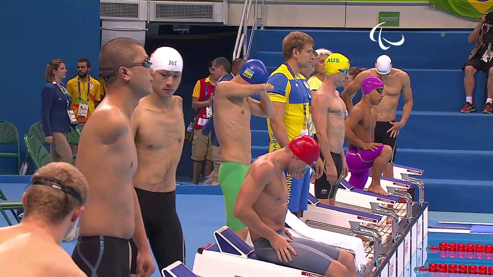
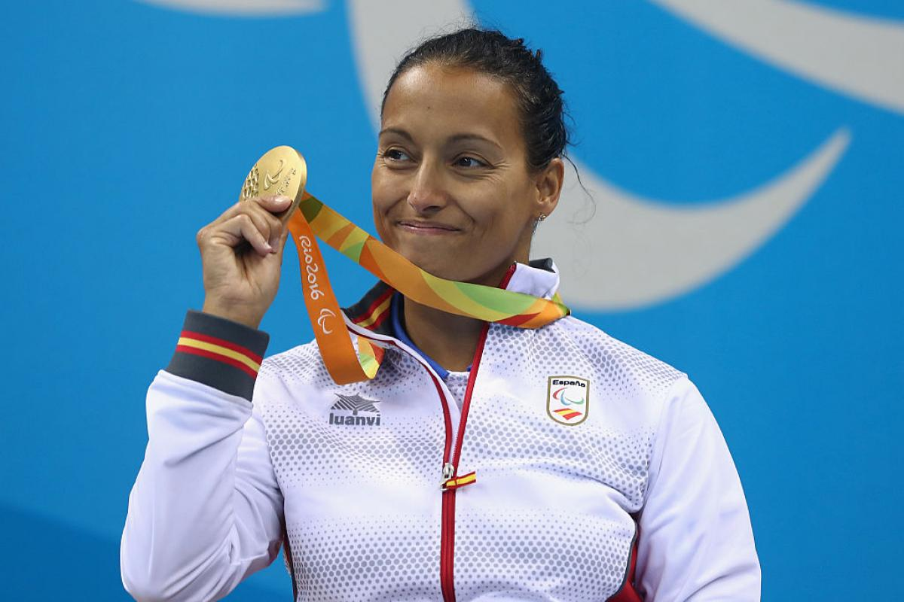
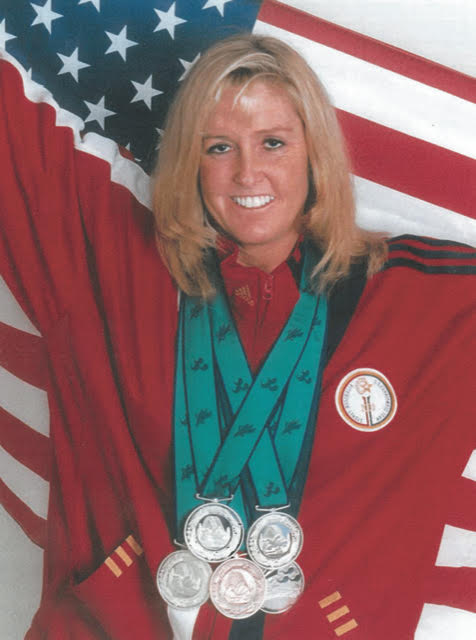
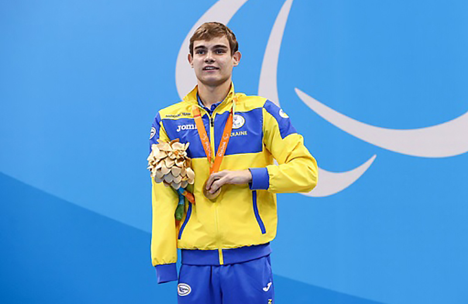

Паралімпійське плавання
Паралімпійське плавання – це адаптований вид спорту для спортсменів з різними видами інвалідності. Змагання проводяться у різних стилях (вільний стиль, батерфляй, брас, на спині, комплексне плавання) з урахуванням класифікації спортсменів.
Коротка історія паралімпійського плавання
Паралімпійське плавання було частиною програми на Паралімпійських іграх у Римі в 1960 році. Відтоді через кожні чотири роки спостерігається збільшення кількості спортсменів і країн, що беруть участь в іграх. Тріша Зорн з США, яка завоювала 32 золотих, 9 срібних і 5 бронзових медалей в період між 1980 та 2004 роками є найтитулованішою спортсменкою в цьому виді спорту. На іграх у Лондоні в 2012 році брало участь 609 плавців з 75 країн світу, які змагалися за 148 комплектів медалей. Чемпіонати світу проводяться що два роки у додаток до регіональних чемпіонатів. У серпні 2010 року в голландському місті Ейндховен на чемпіонаті світу брало участь 649 спортсменів з 53 країн, які змагалися за 181 комплект медалей.
Відомі спортсмени
- Тереза Пералес (Іспанія) - одна з найтитулованіших паралімпійських плавчинь.
- Тріша Зорн (США) - одна з найтитулованіших паралімпійських плавчинь.
- Євген Богодайко (Україна) - багаторазовий паралімпійський чемпіон.